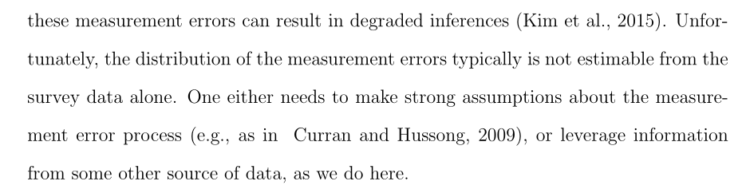

Getting Started with pdfsearch
Brandon LeBeau
2026-11-20
Source:vignettes/intro_to_pdfsearch.Rmd
intro_to_pdfsearch.RmdThis package defines a few useful functions for keyword searching using the pdftools package developed by rOpenSci.
Basic Usage
There are currently two functions in this package of use to users.
The first keyword_search takes a single pdf and searches
for keywords from the pdf. The second keyword_directory
does the same search over a directory of pdfs.
keyword_search Example
The package comes with two pdf files from arXiv to use as test cases. Below is an
example of using the keyword_search function.
library(pdfsearch)
file <- system.file('pdf', '1610.00147.pdf', package = 'pdfsearch')
result <- keyword_search(file,
keyword = c('measurement', 'error'),
path = TRUE)
head(result)
#> # A tibble: 6 × 5
#> keyword page_num line_num line_text token_text
#> <chr> <int> <int> <list> <list>
#> 1 measurement 1 2 <chr [1]> <list [1]>
#> 2 measurement 1 4 <chr [1]> <list [1]>
#> 3 measurement 1 10 <chr [1]> <list [1]>
#> 4 measurement 1 12 <chr [1]> <list [1]>
#> 5 measurement 2 16 <chr [1]> <list [1]>
#> 6 measurement 2 18 <chr [1]> <list [1]>
head(result$line_text, n = 2)
#> [[1]]
#> [1] "Reiter, Maria DeYoreo∗ arXiv:1610.00147v1 [stat.ME] 1 Oct 2016 Abstract Often in surveys, key items are subject to measurement errors. "
#>
#> [[2]]
#> [1] "In some settings, however, analysts have access to a data source on different individuals with high quality measurements of the error-prone survey items. "The location of the keyword match, including page number and line number, and the actual line of text are returned by default.
Surrounding lines of text
It may be useful to extract not just the line of text that the
keyword is found in, but also surrounding text to have additional
context when looking at the keyword results. This can be added by using
the argument surround_lines as follows:
file <- system.file('pdf', '1610.00147.pdf', package = 'pdfsearch')
result <- keyword_search(file,
keyword = c('measurement', 'error'),
path = TRUE, surround_lines = 1)
head(result)
#> # A tibble: 6 × 5
#> keyword page_num line_num line_text token_text
#> <chr> <int> <int> <list> <list>
#> 1 measurement 1 2 <chr [3]> <list [3]>
#> 2 measurement 1 4 <chr [3]> <list [3]>
#> 3 measurement 1 10 <chr [3]> <list [3]>
#> 4 measurement 1 12 <chr [3]> <list [3]>
#> 5 measurement 2 16 <chr [3]> <list [3]>
#> 6 measurement 2 18 <chr [3]> <list [3]>
head(result$line_text, n = 2)
#> [[1]]
#> [1] "Data Fusion for Correcting Measurement Errors Tracy Schifeling, Jerome P. "
#> [2] "Reiter, Maria DeYoreo∗ arXiv:1610.00147v1 [stat.ME] 1 Oct 2016 Abstract Often in surveys, key items are subject to measurement errors. "
#> [3] "Given just the data, it can be difficult to determine the distribution of this error process, and hence to obtain accurate inferences that involve the error-prone variables. "
#>
#> [[2]]
#> [1] "Given just the data, it can be difficult to determine the distribution of this error process, and hence to obtain accurate inferences that involve the error-prone variables. "
#> [2] "In some settings, however, analysts have access to a data source on different individuals with high quality measurements of the error-prone survey items. "
#> [3] "We present a data fusion framework for leveraging this information to improve inferences in the error-prone survey. "Combine hyphenated words
Typeset PDF files commonly contain words that wrap from one line to the next and are hyphenated. An example of this is shown in the following image.

Any hyphenated words are treated as two words and the keyword search
may not perform as desired if a matching word would be returned if it is
not hyphenated. Fortunately, there is a remove_hyphen
argument within the keyword_search function that removes
the hyphenated words at the end of a line and combines them with the
word on the next line in the document. Below is an example of this
working, showing the results before and after using the
remove_hyphen argument. By default this argument is set to
TRUE.
file <- system.file('pdf', '1610.00147.pdf', package = 'pdfsearch')
result_hyphen <- keyword_search(file,
keyword = c('measurement'),
path = TRUE, remove_hyphen = FALSE)
result_remove_hyphen <- keyword_search(file,
keyword = c('measurement'),
path = TRUE, remove_hyphen = TRUE)
nrow(result_hyphen)
#> [1] 36
nrow(result_remove_hyphen)
#> [1] 40You’ll notice that the removal of the hyphen added a few additional keyword matches to the results. These were cases where the word “measurement” wrapped across two lines and was hyphenated (see the image above that has an example of this).
One specific note about removing hyphens in multiple column PDF
files. The ability of the function to perform this action is still
experimental and many times does not work the best as of yet. Use the
remove_hyphen argument with caution with multiple column
PDF files.
Split document into words
Using the tokenizers R package, it is also possible to split the document into individual words. This may be most useful when the interest is in performing a text analysis rather than a keyword search. Below is an example showing the first page of the text converted to words. By default, hyphenated words at the end of the lines are removed (see previous section for description of this).
token_result <- convert_tokens(file, path = TRUE)[[1]]
head(token_result)
#> [[1]]
#> [1] "data" "fusion" "for" "correcting"
#> [5] "measurement" "errors" "tracy" "schifeling"
#> [9] "jerome" "p" "reiter" "maria"
#> [13] "deyoreo" "arxiv" "1610.00147v1" "stat"
#> [17] "me" "1" "oct" "2016"
#> [21] "abstract" "often" "in" "surveys"
#> [25] "key" "items" "are" "subject"
#> [29] "to" "measurement" "errors" "given"
#> [33] "just" "the" "data" "it"
#> [37] "can" "be" "difficult" "to"
#> [41] "determine" "the" "distribution" "of"
#> [45] "this" "error" "process" "and"
#> [49] "hence" "to" "obtain" "accurate"
#> [53] "inferences" "that" "involve" "the"
#> [57] "error" "prone" "variables" "in"
#> [61] "some" "settings" "however" "analysts"
#> [65] "have" "access" "to" "a"
#> [69] "data" "source" "on" "different"
#> [73] "in" "dividuals" "with" "high"
#> [77] "quality" "measurements" "of" "the"
#> [81] "error" "prone" "survey" "items"
#> [85] "we" "present" "a" "data"
#> [89] "fusion" "framework" "for" "leveraging"
#> [93] "this" "information" "to" "improve"
#> [97] "infer" "ences" "in" "the"
#> [101] "error" "prone" "survey" "the"
#> [105] "basic" "idea" "is" "to"
#> [109] "posit" "models" "about" "the"
#> [113] "rates" "at" "which" "individuals"
#> [117] "make" "errors" "coupled" "with"
#> [121] "models" "for" "the" "values"
#> [125] "reported" "when" "errors" "are"
#> [129] "made" "this" "can" "avoid"
#> [133] "the" "unrealistic" "assumption" "of"
#> [137] "conditional" "independence" "typically" "used"
#> [141] "in" "data" "fusion" "we"
#> [145] "apply" "the" "approach" "on"
#> [149] "the" "re" "ported" "values"
#> [153] "of" "educational" "attainments" "in"
#> [157] "the" "american" "community" "survey"
#> [161] "using" "the" "national" "survey"
#> [165] "of" "college" "graduates" "as"
#> [169] "the" "high" "quality" "data"
#> [173] "source" "in" "doing" "so"
#> [177] "we" "account" "for" "the"
#> [181] "informative" "sampling" "design" "used"
#> [185] "to" "select" "the" "national"
#> [189] "survey" "of" "college" "graduates"
#> [193] "we" "also" "present" "a"
#> [197] "process" "for" "assessing" "the"
#> [201] "sensitivity" "of" "various" "analyses"
#> [205] "to" "different" "choices" "for"
#> [209] "the" "measurement" "error" "models"
#> [213] "supplemental" "material" "is" "available"
#> [217] "online" "key" "words" "fusion"
#> [221] "imputation" "measurement" "error" "missing"
#> [225] "survey" "this" "research" "was"
#> [229] "supported" "by" "the" "national"
#> [233] "science" "foundation" "under" "award"
#> [237] "ses" "11" "31897" "the"
#> [241] "authors" "wish" "to" "thank"
#> [245] "seth" "sanders" "for" "his"
#> [249] "input" "on" "informative" "prior"
#> [253] "specifications" "and" "mauricio" "sadinle"
#> [257] "for" "discussion" "that" "improved"
#> [261] "the" "strategy" "for" "accounting"
#> [265] "for" "the" "informative" "sample"
#> [269] "design" "1"Another implementation of the convert_tokens function,
is to convert the result text to tokens. This could be interesting when
used in tandem with the surround_lines argument for input into a text
analysis. These tokens are included by default when calling the
keyword_search function.
file <- system.file('pdf', '1501.00450.pdf', package = 'pdfsearch')
result <- keyword_search(file,
keyword = c('repeated measures', 'mixed effects'),
path = TRUE, surround_lines = 1)
result
#> # A tibble: 9 × 5
#> keyword page_num line_num line_text token_text
#> <chr> <int> <int> <list> <list>
#> 1 repeated measures 1 9 <chr [3]> <list [3]>
#> 2 repeated measures 2 31 <chr [3]> <list [3]>
#> 3 repeated measures 2 58 <chr [3]> <list [3]>
#> 4 repeated measures 2 60 <chr [3]> <list [3]>
#> 5 repeated measures 2 70 <chr [3]> <list [3]>
#> 6 repeated measures 6 168 <chr [3]> <list [3]>
#> 7 repeated measures 6 179 <chr [3]> <list [3]>
#> 8 repeated measures 6 184 <chr [3]> <list [3]>
#> 9 repeated measures 9 314 <chr [3]> <list [3]>
keyword_directory Example
The keyword_directory function is useful when you have a
directory of many pdf files that you want to search a series of keywords
in a single function call. This can be particularly useful in the
context of a research synthesis or to screen studies for characteristics
to include in a meta-analysis.
There are two files that come with the package from ArXiv in a single directory that will be used as an example use case for the package.
directory <- system.file('pdf', package = 'pdfsearch')
result <- keyword_directory(directory,
keyword = c('repeated measures', 'mixed effects',
'error'),
surround_lines = 1, full_names = TRUE)
head(result)
#> ID pdf_name keyword page_num line_num
#> 1 1 1501.00450.pdf repeated measures 1 9
#> 2 1 1501.00450.pdf repeated measures 2 31
#> 3 1 1501.00450.pdf repeated measures 2 58
#> 4 1 1501.00450.pdf repeated measures 2 60
#> 5 1 1501.00450.pdf repeated measures 2 70
#> 6 1 1501.00450.pdf repeated measures 6 168
#> line_text
#> 1 We Running under powered experiments have many perils. , Not introduce more sophisticated experimental designs, specifi- only would we miss potentially beneficial effects, we may also cally the repeated measures design, including the crossover get false confidence about lack of negative effects. , Statistical design and related variants, to increase KPI sensitivity with power increases with larger effect size, and smaller variances. the same traffic size and duration of experiment.
#> 2 a limitation to any online experimentation platform, where within-subject variation. , We also discuss practical considfast iterations and testing many ideas can reap the most erations to repeated measures design, with variants to the rewards. crossover design to study the carry over effect, including the “re-randomized” design (row 5 in table 1). , 1.1 Motivation To improve sensitivity of measurement, apart from accurate 1.2 Main Contributions implementation and increase sample size and duration, we In this paper, we propose a framework called FORME (Flexcan employ statistical methods to reduce variance.
#> 3 In the Table 1: Repeated Measures Designs following section we assume the minimum experimentation “period” to be one full week, and may extend to up to two In this paper we extend the idea further by employing the weeks. , To facilitate our illustration, in all the derivation repeated measures design in different stages of treatment in this section we assume all users appear in all periods, assignment. , The traditional A/B test can be analyzed us- i.e. no missing measurement.
#> 4 The traditional A/B test can be analyzed us- i.e. no missing measurement. , We also restrict ourselves ing the repeated measures analysis, reporting a “per week” to metrics that are defined as simple average and assume treatment effect, as show in row 3 “parallel” design in ta- treatment and control have the same sample size. , We furble 1.
#> 5 This way average treatment effect (ATE) δ = µT − µC which is a each user serves as his/her own control in the measurement. fixed effects in the model in this section. , This way, various In fact, the crossover design is a type of repeated measures designs considered can be examined in the same framework design commonly used in biomedical research to control for and easily compared., We will proceed to show, with theoretical derivations, that 2.1 Two Sample T-test given the same total traffic Let X denote the observed average metric value in control group and Y denote that in the treatment group.
#> 6 5. , FLEXIBLE AND SCALABLE REPEATED One way to see measurements are not missing at random is MEASURES ANALYSIS VIA FORME to realize infrequent users are more likely to have missing 5.1 Review of Existing Methods values and the absence in a specific time window can still It is common to analyze data from repeated measures design provide information on the user behavior and in reality there with the repeated measures ANOVA model and the F-test, might be other factors causing user to be missing that are under certain assumptions, such as normality, sphericity (honot even observed. , Instead of throwing away data points mogeneity of variances in differences between each pair of where user appeared in only one period and is exposed to within-subject values), equal time points between subjects, only one of the two treatments, in practice, we included an and no missing data.
#> token_text
#> 1 we, running, under, powered, experiments, have, many, perils, not, introduce, more, sophisticated, experimental, designs, specifi, only, would, we, miss, potentially, beneficial, effects, we, may, also, cally, the, repeated, measures, design, including, the, crossover, get, false, confidence, about, lack, of, negative, effects, statistical, design, and, related, variants, to, increase, kpi, sensitivity, with, power, increases, with, larger, effect, size, and, smaller, variances, the, same, traffic, size, and, duration, of, experiment
#> 2 a, limitation, to, any, online, experimentation, platform, where, within, subject, variation, we, also, discuss, practical, considfast, iterations, and, testing, many, ideas, can, reap, the, most, erations, to, repeated, measures, design, with, variants, to, the, rewards, crossover, design, to, study, the, carry, over, effect, including, the, re, randomized, design, row, 5, in, table, 1, 1.1, motivation, to, improve, sensitivity, of, measurement, apart, from, accurate, 1.2, main, contributions, implementation, and, increase, sample, size, and, duration, we, in, this, paper, we, propose, a, framework, called, forme, flexcan, employ, statistical, methods, to, reduce, variance
#> 3 in, the, table, 1, repeated, measures, designs, following, section, we, assume, the, minimum, experimentation, period, to, be, one, full, week, and, may, extend, to, up, to, two, in, this, paper, we, extend, the, idea, further, by, employing, the, weeks, to, facilitate, our, illustration, in, all, the, derivation, repeated, measures, design, in, different, stages, of, treatment, in, this, section, we, assume, all, users, appear, in, all, periods, assignment, the, traditional, a, b, test, can, be, analyzed, us, i, e, no, missing, measurement
#> 4 the, traditional, a, b, test, can, be, analyzed, us, i, e, no, missing, measurement, we, also, restrict, ourselves, ing, the, repeated, measures, analysis, reporting, a, per, week, to, metrics, that, are, defined, as, simple, average, and, assume, treatment, effect, as, show, in, row, 3, parallel, design, in, ta, treatment, and, control, have, the, same, sample, size, we, furble, 1
#> 5 this, way, average, treatment, effect, ate, δ, µt, µc, which, is, a, each, user, serves, as, his, her, own, control, in, the, measurement, fixed, effects, in, the, model, in, this, section, this, way, various, in, fact, the, crossover, design, is, a, type, of, repeated, measures, designs, considered, can, be, examined, in, the, same, framework, design, commonly, used, in, biomedical, research, to, control, for, and, easily, compared, we, will, proceed, to, show, with, theoretical, derivations, that, 2.1, two, sample, t, test, given, the, same, total, traffic, let, x, denote, the, observed, average, metric, value, in, control, group, and, y, denote, that, in, the, treatment, group
#> 6 5, flexible, and, scalable, repeated, one, way, to, see, measurements, are, not, missing, at, random, is, measures, analysis, via, forme, to, realize, infrequent, users, are, more, likely, to, have, missing, 5.1, review, of, existing, methods, values, and, the, absence, in, a, specific, time, window, can, still, it, is, common, to, analyze, data, from, repeated, measures, design, provide, information, on, the, user, behavior, and, in, reality, there, with, the, repeated, measures, anova, model, and, the, f, test, might, be, other, factors, causing, user, to, be, missing, that, are, under, certain, assumptions, such, as, normality, sphericity, honot, even, observed, instead, of, throwing, away, data, points, mogeneity, of, variances, in, differences, between, each, pair, of, where, user, appeared, in, only, one, period, and, is, exposed, to, within, subject, values, equal, time, points, between, subjects, only, one, of, the, two, treatments, in, practice, we, included, an, and, no, missing, dataThe full_names argument is needed here to specify that
the full file path needs to be used to access the pdf files. If the
search is done directly from the repository (i.e. when using an R
project in RStudio), then full_names could be set to
FALSE.
Limitations
Currently there are a handful of limitations, mostly around how pdfs
are read into R using the pdftools R package. When pdfs are created in a
multiple column layout, a line in the pdf consists of the entire line
across both columns. This can lead to fragmented text that may not give
the full contents, even with using the surround_lines
argument.
Another limitation is when performing keyword searching with multiple words or phrases. If the match is on a single line, the match would be returned. However, if the words or phrase spans multiple lines, the current implementation will not return a result that spans multiple lines in the PDF file.